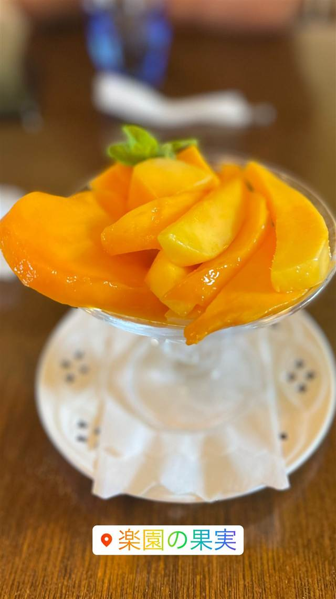
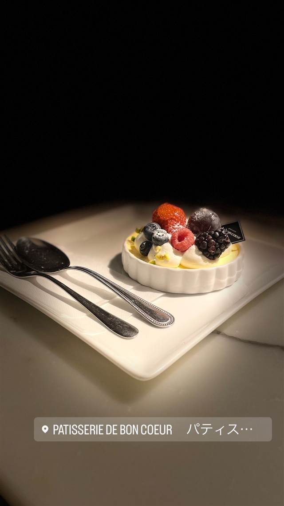
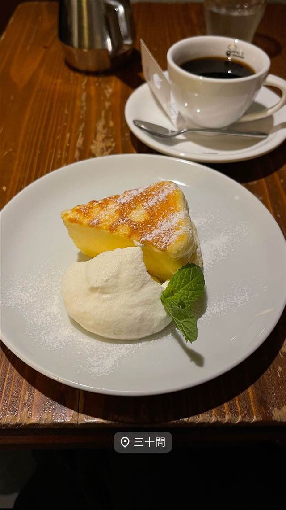

スイーツ · ケーキ・パフェ · 来間島
楽園の果実 Cafe & おみやげ館
20年以上有機JAS認証のマンゴーを使ったマンゴーパフェ
楽園の果実
来間島にある農園直営の農家れすとらん。20年以上有機JAS認証を保持する自社農園でオーガニック栽培したマンゴーを使い、マンゴーパフェをはじめとしたスイーツを提供している。
TRIVIA
豆知識
- 宮古島エリアで有機JAS認証マンゴーを栽培する数少ない農園の一つ
- 自社農園でオーガニック栽培したマンゴーを20年以上提供し続けている
REVIEWS
世間の評判
3.49食べログ
完熟マンゴーパフェの満足度
- 完熟マンゴーを贅沢に使ったパフェの美味しさを評価する声が多い
- 来間島の景色を望むアジアンテイストの店内の雰囲気を評価する声がある
- 平日でも行列ができるほど混雑し人気メニューが売り切れることもあるという声が多い
- 実際にかかる金額は表示価格より高めだと感じる声もある
食べログ 口コミ725件
| 看板 | マンゴーパフェ、マンゴージュース、プリン、ジェラート |
|---|---|
| こだわり | 来間島の自社温室でオーガニック栽培したマンゴーを使用し、20年以上にわたり有機JAS認証を保持している。 |
| どこから | 遠方 |
| 予算 | 昼 ¥1,000～¥1,999 夜 ¥1,000～¥1,999 |
| 定休日 | 不定休 |
| 予約 | 予約不可 |
| 場所 | 沖縄県宮古島市下地字来間476-1 |
| メモ | 来間島の龍宮城展望台近く。観光客に人気で、時期により混雑・品切れになることもある。 |
食べたもの：マンゴーパフェ
NEARBY
近い店・同じ系統の店
-
 ケーキ・パフェ 目白駅
AIGRE DOUCE（エーグルドゥース）
クープ・デュ・モンド準優勝シェフの苺のショートケーキ
昼 ¥1,000～¥1,999 夜 ¥1,000～¥1,999
ケーキ・パフェ 目白駅
AIGRE DOUCE（エーグルドゥース）
クープ・デュ・モンド準優勝シェフの苺のショートケーキ
昼 ¥1,000～¥1,999 夜 ¥1,000～¥1,999
-
 ケーキ・パフェ 自由が丘
パティスリー パリ セヴェイユ
ラデュレ仕込みの技が光るカヌレ、食べログ百名店の一軒
昼 ¥1,000～¥1,999 夜 ¥1,000～¥1,999
ケーキ・パフェ 自由が丘
パティスリー パリ セヴェイユ
ラデュレ仕込みの技が光るカヌレ、食べログ百名店の一軒
昼 ¥1,000～¥1,999 夜 ¥1,000～¥1,999
-
 ケーキ・パフェ 代々木公園駅
ナタ・デ・クリスチアノ（Nata de Cristiano's）
姉妹店の人気デザートが独立したポルトガル風エッグタルト
昼 ～¥999 夜 ～¥999
ケーキ・パフェ 代々木公園駅
ナタ・デ・クリスチアノ（Nata de Cristiano's）
姉妹店の人気デザートが独立したポルトガル風エッグタルト
昼 ～¥999 夜 ～¥999
-
 ケーキ・パフェ 白金高輪駅
メゾン・ダーニ（MAISON D'AHNI）
本場ビアリッツの老舗で出会った郷土菓子ガトーバスク
昼 ¥1,000～¥1,999
ケーキ・パフェ 白金高輪駅
メゾン・ダーニ（MAISON D'AHNI）
本場ビアリッツの老舗で出会った郷土菓子ガトーバスク
昼 ¥1,000～¥1,999
-

ケーキ・パフェ 武蔵小山 パティスリィ ドゥ・ボン・クーフゥ 武蔵小山本店 月替わりパルフェは完全予約制のイートイン限定で持ち帰りができない 昼 ¥3,000～¥3,999 夜 ¥4,000～¥4,999 -

ケーキ・パフェ 銀座 珈琲専門店 三十間 銀座本店 地下の隠れ家で味わうふわふわチーズケーキとコーヒー 昼 ¥1,000～¥1,999 夜 ¥1,000～¥1,999